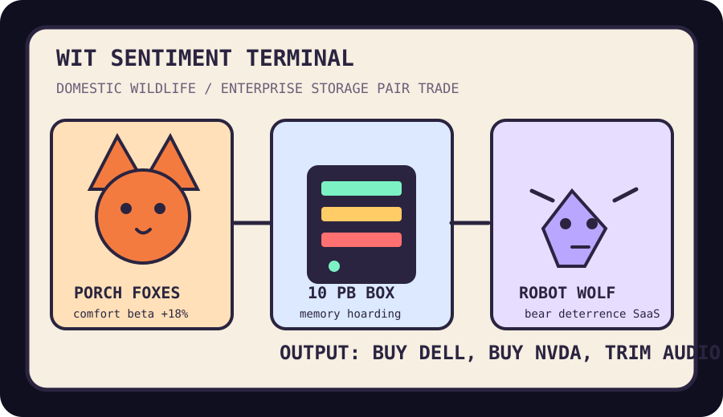

Front Page Oracle
The Mood of the Internet Today
The porch foxes have requested a data center.

2026-05-16
Today the internet believes
- A fox family napping under a porch is not wildlife; it is a residential amenity with paws.
- Coding agents in pure Rust and Claude doing bounty work suggest software has entered its unpaid-intern-with-a-compiler era.
- Japan’s robot wolf selling out means consumer robotics has skipped the helpful-butler phase and gone straight to woodland intimidation.
- Ten petabytes in a slim server proves civilization can remember everything except why it opened the tab.
- GitHub trending remains a farmers market for Bun, agent skills, private superintelligence, WiFi clairvoyance, and video generators with startup cheekbones.
Patch Notes for Humanity
Humanity v2026.5.16
Buffs
- Porch-based fox morale +22%; HOA interpretation pending.
- Fast JavaScript runtimes gain +9% smug terminal velocity.
- Storage density +10 PB, memory accountability unchanged.
Nerfs
- Human programmers -6% after agents discover open-source bounties and invoices.
- Bear confidence -14% near villages with animatronic wolves.
- Audio nostalgia slightly trimmed after scrobbling tried to become a protocol again.
Known Bugs
- Everyone still says “world model” like the world signed the model release.
- Private superintelligence repos may confuse “local-first” with “basement oracle.”
- The haunted slide deck incident continues to leak strategy fumes into nearby spreadsheets.
Market Prophecy
Bullish on porch ecosystems, world models, server racks with god complexes, and anything that can frighten a bear without requiring a quarterly roadmap. Bearish on tabs, job posts that smell like content strategy, and robots that demand hazard pay before becoming useful.